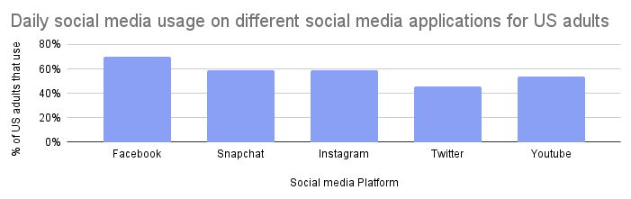

Screen Time
Analysis 2: What is screen time and why is it harmful?
How much social media usage could be considered an addiction?
Addiction is defined as having an uncontrollable urge to use or do a certain activity.
Social media can also cause these urges meaning that it can count as an addiction, and in
the current day and age where technology and the internet are so prominent in everyday life
accessing it and further worsening the addiction is significantly easier to achieve.
According to California State University, 210 million people are addicted to social media
worldwide, highlighting how social media is making a large impact. In America, 28.1 million
people are addicted to alcohol, which is currently the most abundant addiction type
worldwide. Social media has been around for only 20 years, whereas alcohol has existed for
numerous decades, so imagine what happens when it spreads more and the addiction increases
over time.
Hence, social media can be considered an addiction and is shaping to be one of the most
impactful that there is worldwide if the trend continuess
As previously mentioned, social media addiction is a growing addiction that will likely be the most common addiction within the next century. S,o let's see what side effects it will have on people and its similarities to other types of addiction. Social media addiction seems to heavily overlap with addictions such as substance abuse and drug usage as it begins to impact a person daily, such as constant headaches and withdrawal symptoms likely to occur when there is no usage of social media for a short period. These will likely affect a person's social life as their mind will start to prioritise the usage of screens and being in the virtual world rather than a practical one. Moreover, there will likely be an effect on sleep as the usage of screens has blue light, which has been proven to affect sleeping habits and proficiency of their deep sleep where their body can usually recharge. Suppose it occurs to an adult with a professional life, such as working in an office. In that case, it will likely urge you to lose track of goals that need to be achieved, and your general thought process will become more rash and aggressive, further impacting your proficiency and your ability to work with colleagues. Hence, social media will likely affect all aspects of the patient's life, causing more agitated and unfocused people to rely on the short doses of dopamine created in their brains.
How is the brain growth of kids with social media addiction affected?
Note: It is too early to have data, but common trends have been found
It is too soon to witness the effects of social media and screen time. Still, some traits
have been seen in children who rely on screens, such as early aggression, which their minds
gain from social media and the content they are being provided.
This pattern of reliance on children is heavily influenced by parents being negligent of
what their children are watching and giving screen time for parents to relax and sit back.
Yet, when children seem to be interacting more with screens than with conversations with
others, they tend to become anti-social and limit the amount of physical activity they
participate in.
Hence, parents should understand the liking of their children, try to cooperate with them,
and encourage them to do their activities, creating time for the parents to sit back and
watch while the child develops new skills.
hint: click a picture to make it bigger
 daily social media usage on different social media applications for US adults